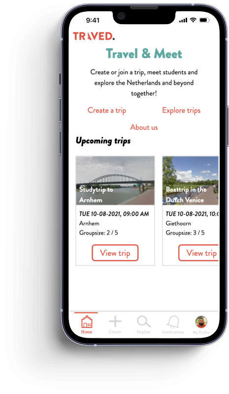
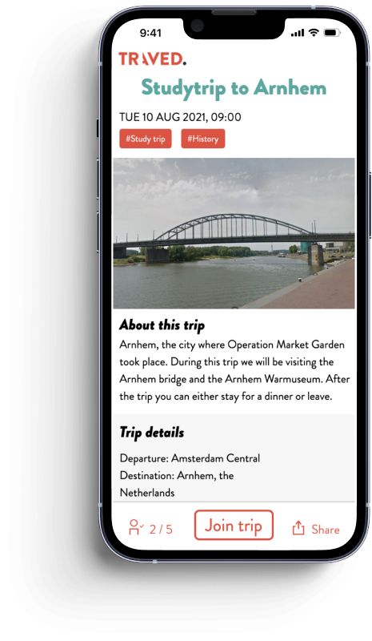

For this project I had to create a web app prototype for the NOTED. book. The NOTED. book is a guide for international students in Amsterdam. The web app had to add value to the book to make the stay for the international students even better.
I started this project with creating the concept itself. I decided to create a web app where students can create day trips where after other students can join in if they are interested. Once students join in there would be a chat function where they can communicate with each other.
After I had a concept we had to make different wireframes and color schemes. Once we had our wireframes we designed the hi-fi prototype.